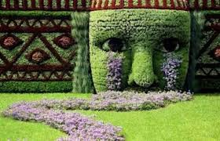

Project 1

This particular garden is one of our most daring project and with good reason. The time spent will be on of the most time consuming since we started and will require a team of 10 Garden Lanscapist and gardening experts. The project went through a series of intense review before being approved. Here you can see the Babylonian inspiration in the works. The eyes captivating and the design of the tears etching down from the sculpted face. Think persian mysticism mixed with Roman design and eccentricity. We spare no costs for the projects and the particular design is with large businesses in mind or large estates with spacious gardens in the back.